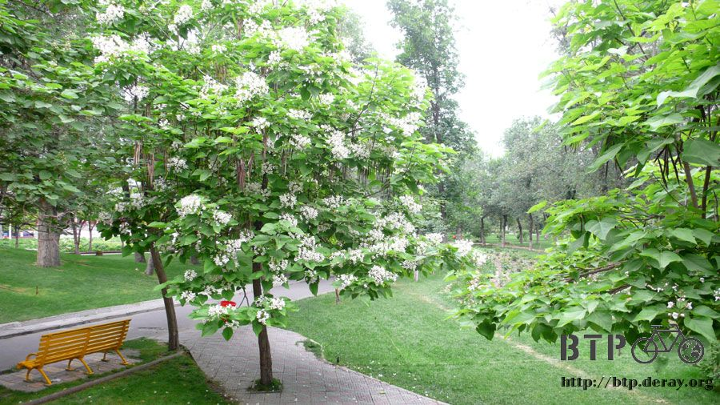

再窮也要玩
我並不會因為失去一張提款卡就讓自己瞬間變窮，身上的現金還是有幾百塊錢能花，餓不死也不會留街頭。
但這卻嚴重的關係到將來的旅費，哈薩克、俄羅斯，要是沒有提款卡我就不能領錢，人民幣花光了還剩下小額的美金。
要撐到莫斯科不太可能，畢竟離開中國之後，消費的水平就會直線上升，像現在的物價到時候只能懷念了。
提款卡遺失，在國外旅行的我，只能透過米莎莎幫我掛失，但是補辦就要等到回台灣才有辦法。
解決的現金旅費不足問題，得知可以拿著信用卡去中國銀行刷卡換現金，真是一個實用的資訊。
本來我還想說去電腦城刷卡買一些高單價的產品，然後當場賣掉換現金。
昨天凌晨一點半，突然有兩個人住宿，我獨享的空間就瞬間變得很擁擠，還好他們也是只住一晚上就走。
但是隔天早上我就得等他們都退房之後我才敢離開房間，不然小多和一堆的行李跟陌生人放在一起，怎能安的下心。
離開旅館前泡了一大杯的熱巧克力來喝，現在已經不是花錢吃早餐的悠閒時光了，在錢的問題解決之前，先能省則省吧。
提款卡遺失的同時，我也遺失了身分證和跟一張照片，好加在重要的東西都是分開放的，雖然遭受打擊，但還不致於一蹶不振。
從包包裡面的暗袋又翻出了兩張信用卡，再帶上護照，接近中午的時候出發去銀行刷卡換現金。
住的地方附近都是通訊行或是電信商場，大樓裡面賣的是手機，大樓外面則是一堆回收手機的個體戶。
當場買下別人不要的手機，然後馬上再轉手賣掉賺價差，這樣的生意似乎不難做，因為放眼望去全是做這樣生意的人。
散步走到中國銀行，這邊位於昨天那個金字塔的圓環，是一條金融街。
銀行外頭有很多人手上拿著一大疊的錢幣，對進出銀行的人比畫，這是幹嘛？難不成是在賣錢的嗎？
原來這些人還真的是在賣錢的，收你手上的各種貨幣，美金、人民幣、盧布、日圓，啥都行，然後再換成你想要的貨幣，比如說人民幣。
可能會有拿到假鈔的風險，但是他們所賺的是匯差的部分，匯率他們自己說了算，要是你覺得合理的話就交易吧。
我跟諮詢櫃檯的人問說我想要刷卡換現金，真的有這樣的服務嗎？
米莎莎在台灣幫我問的結果是，只要帶著信用卡和護照就可以去銀行領錢，費用是領的錢加上3.5%和一百元台幣的手續費。
還要經過台幣兌換美金再兌換人民幣的匯差，所以不是很好的交易，但是提款卡弄丟了也沒別的選擇。
諮詢櫃檯的人說排隊的人太多了，直接拿信用卡去外面的ATM就可以刷卡換現金了。
是不是真的這麼方便？那提款卡掉了也沒關係呀，用信用卡還不是一樣可以領錢。
放入卡片，輸入提款卡的密碼，出現密碼錯誤，還以為是打錯了，又試了幾次，然後....我的信用卡就被ATM給吃掉了T_T
繼遺失提款卡之後，又再度遭受信用卡被ATM吃掉的慘劇，我真的很想趴在地上打滾哭說『老天爺你別捉弄我』。
好加在被吃掉的那一張是三萬元額度的信用卡，身上還有一張五萬元額度的，三天後還可以試著到銀行領回被吃掉的卡片，但是機會渺茫。
連續遺失兩張卡片，垂頭喪氣的走回招待所，經過超市的時候，我去買了接下來幾天的糧食，泡麵。
選了最便宜的泡麵，一包一塊錢，一口氣先買五包，吃多應該會很膩才是，美食離我而去了，心裡感概的付過錢領回一袋泡麵。
回到招待所，老闆問我今天要去哪玩？天池去不去？他可以幫我叫車。
我揮揮手說沒現金了，哪也別想去，舉起手上的一袋泡麵，今後都得吃這個過日子了。
我的早餐、午餐和下午茶都吃泡麵，今天吃了三包，剩下兩包明天繼續吃。
因為這打擊說大不大說小不小，說穿了不過就是錢的問題，了不起進行極簡旅行，真的要走還是走得下去的。
回招待所之後就沒有再出去，把百年孤寂又從頭到尾看過一次，配著之前買的餅乾和零食，真有種坐吃山空的感覺。
一口氣看完，呼的一聲闔上書本，時間是下午六點，外頭的天空雲層有點多，還蠻涼快的。
沒錢有沒錢的玩法，整天都待在招待所裡未免太像一隻喪家之犬，翻著地圖看看哪裡可以去。
離招待所不遠的地方，往西邊走大概兩公里有一個很大的人民公園，公園都是免費的，走吧～去散散心。
之前往南到大巴扎，往北到紅山公園，這次是往西走，換一個方向也換個城市風貌欣賞一下。
從這邊可以看到紅山公園的摩天輪和頂端的寺廟，話說烏魯木齊還真多摩天輪。
走著走著沒多遠就到人民公園了，它是非常長的長方形，有南北兩個入口，我從南入口進去，走好長一段路到北門，然後再走回南門。
這邊是一個超級大的公園，裡面還放了很多兒童樂園的設施、餐廳、攤販等，但一點都不顯得擁擠，因為公園實在是太大了。
一進門就看到一個阿嬤在幫孫子摘樹上的果子，因為阿嬤身高很矮，摘不到果子還想爬樹，目標是熟成紫色才能吃的野莓。
所以就由我自告奮勇的出馬，幫忙摘了一些給小朋友吃，雖然不是我自己吃，但是摘著摘著都忘我起來了，後來還被公園管理的人罵~_~
一些玩遊戲的小攤位，其實不外乎射擊、丟球、套圈圈這些，但除了基本上會送的布偶之外，這邊也拿活生生的小動物當獎品。
看到綠意盎然的樹木，心情就變好了起來，翠綠的草坪上除了野餐的人，也有情侶在這裡卿卿我我，蠻甜蜜的。
公園內種植的樹木種類很多，可能有百種以上，搭配出很像森林的感覺。

公園裡有一條很長的屋簷步道，稱為火車長廊，長廊很漂亮，很多人在這邊坐著聊天，也有免費的音樂演奏可以聽。

幾個大男生就伴隨著民俗風味的曲調跳起舞來，跳的真的很痤，會有一種想要揍人的感覺，可是還蠻好笑的 XD
演奏完畢之後，大家都互看對方，不知道該不該替這樣無厘頭的表演鼓掌。
公園裡面有很多的鳥類，除了野生的之外，也有被人類飼養，完全不怕生的雪白鴿子。
除了大樹、草坪、鮮花，這裡也有幾個湖泊，湖水大多是綠色，很多人在這邊釣魚，而且真的可以釣到魚，技術好的都滿載而歸。
湖的中間有一個湖心亭和一座湖心島，很舒適的地方，
湖畔旁是一些賣瓷器的店家，真是奇怪，沒事跑到這邊賣瓷器幹嘛呢，真的會有生意嗎？@@"
湖岸都種了柳樹，柳枝長了之後就會下垂到湖裡，蠻詩情畫意的。
這個就是湖心島的樣子，只要繞著湖走一圈，走過一座拱橋就可以過去。
這則是往湖心亭的橋。
湖的隔壁有一座很大的朝陽閣，大的像一座飯店一樣，大門是關著的，裡頭不知道有什麼東西。
公園內有一些雕像，其中一座是李白，園內還有一些石頭上會刻著李白的作品，
從他的眼光看過去，是一座已經興建到頂端的尖塔型大廈。
園內的廁所蓋成假山的樣子，很別緻。公園內還有一根長長的柱子，非常低調的刻了一些文字在上面，
越低調的東西通常越有莊嚴性，果然是一座人民英雄紀念碑。
園內有很多的遊樂設施，摩天輪、旋轉木馬、碰碰船、雲霄飛車，多到數也數不清，每個都是要錢的，所以冷清的令人唏噓。
除了要錢的部分，也設置了很多免費的遊樂設施，同時有歡樂和健身的效果。
諾大的公園，從進去到出來走了將近兩個小時才走一圈，走的腳都有點發軟，這時候已經九點多，
肚子有點餓，想到回招待所又要繼續吃泡麵就覺得很沒力，所以在小巷子裡吃了一份正式的晚餐。
點了一份牛肉炒米粉，新疆居然也有米粉呢，在離台灣這麼遠的地方可以吃到新竹的名產真是開心。
結果端上桌之後不是我想的那種米粉，而是類似米苔目的東西，看起來就很辣，吃起來真的很辣很辣。
額頭狂冒汗，喝光兩個茶壺的茶水，舌頭辣的發麻，好不容易才吃完，不能吃辣的人在點餐之後一定要說不要放辣子。
因為八成以上的料理都是或多或少有點辣的。
出公園的時候問了一下門口的旅行社，到天池玩的話要多少錢？
之前招待所的老闆說要幫我叫車，一天只收我三百元，他說光是門票就是九十，收三百很便宜了。
自己在公園門口問的結果，來回的車資、天池的門票、午餐一份含導遊的費用，早上九點半出發，下午七點半回烏魯木齊，費用是一百二十元。
比我預料中還要便宜太多了，反覆確認這是含門票的價錢，非常的心動。
錢的問題應該有辦法解決，明天就去天池玩一天吧！別喝汽水就算對得起荷包了。
繼續閱讀：6.13 天山‧天池
中國-人民幣－ 1：4.3 台幣
6.12 |
總計：30元 |
泡麵5元、住店20元、晚餐牛肉炒米粉5元 |
|